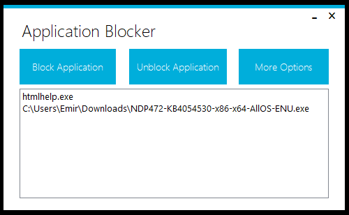
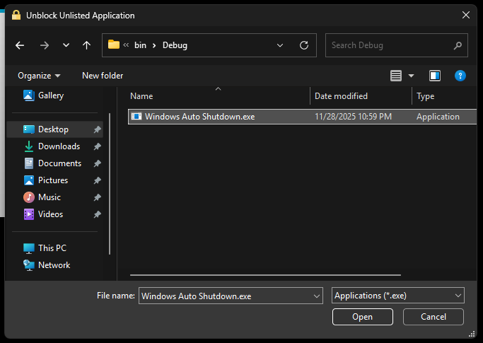

Unblocking Applications

To unblock an application, select the blocked application from the list and click "Unblock Application" button. This will unblock the selected application. Programs blocked using standart block uses full path. Programs blocked using password locking uses only the file name. When the last password locked application gets unblocked, the program no longer works at background and removes startup entries until a program gets blocked using password lock again.
Unblocking Unlisted (Another) Application
If you have lost the blocked applications list and some programs remain as blocked, you can click "More Options" -> "Unblock Unlisted Application". This will open a file browser. You can select an exe file to unblock.
